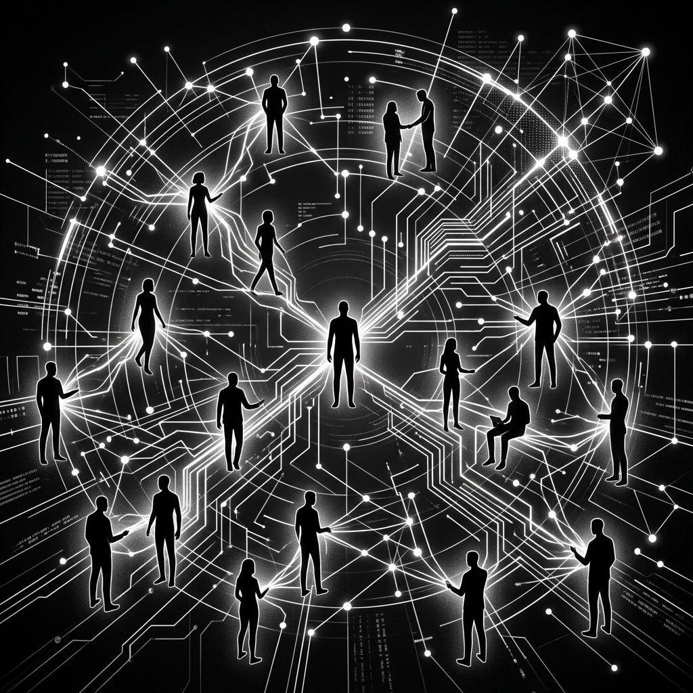
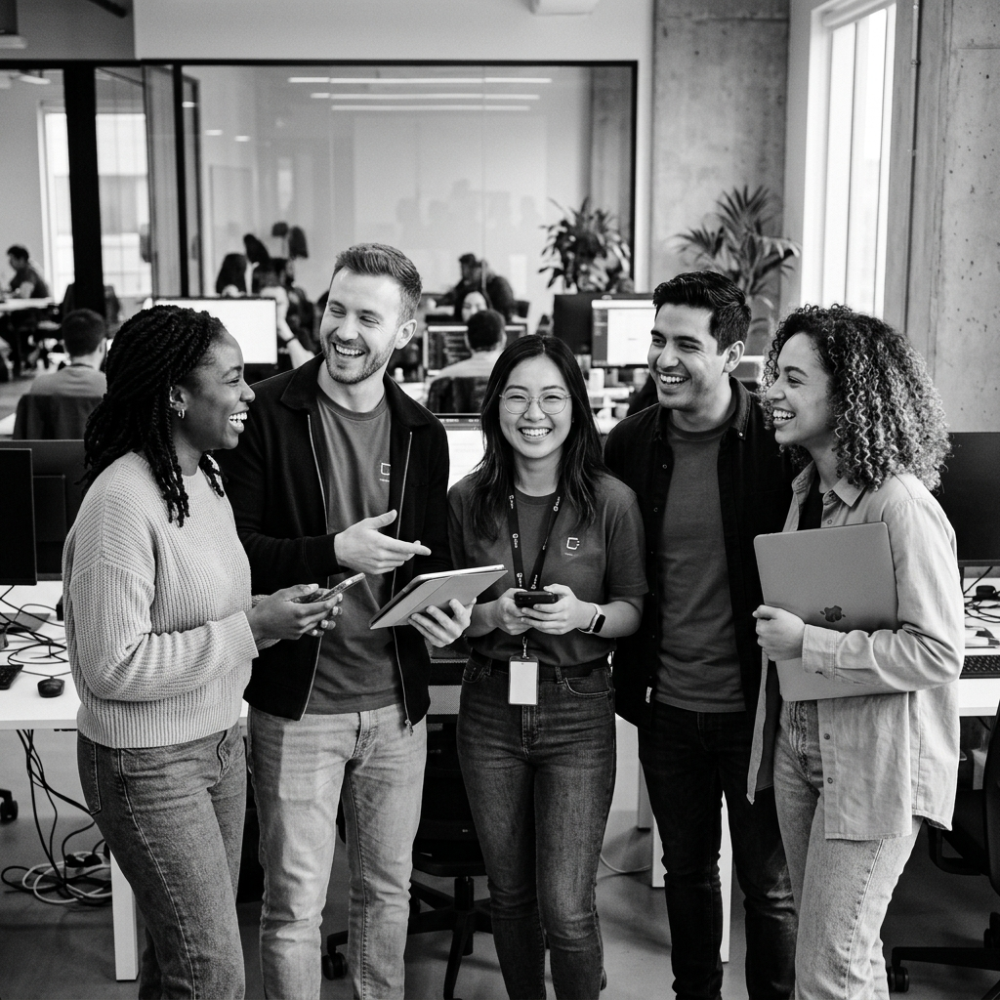

build the future of human connection and the technology that makes it possible

Our Principle
Website ini dirancang dengan visi utama untuk menciptakan ekosistem digital tempat teknologi berfungsi sebagai jembatan, mempererat ikatan antar manusia dan memperluas potensi kolaborasi global.
Kemanusiaan di Pusat Teknologi
Inovasi kami dirancang untuk mendukung interaksi antar manusia yang lebih bermakna, menjaga emosi, empati, dan kehadiran nyata dalam setiap komunikasi digital.
Aksesibilitas & Inklusivitas
Teknologi harus dapat diakses oleh semua lapisan masyarakat tanpa diskriminasi. Kami membangun antarmuka yang intuitif dan ramah untuk pengguna umum.
Privasi & Keamanan Data
Kepercayaan adalah fondasi hubungan. Kami menerapkan transparansi total dan perlindungan data yang kuat demi kenyamanan seluruh pengguna.
Pertumbuhan Berkelanjutan
Mendorong perkembangan teknologi yang berdampak positif bagi masyarakat, mendukung pendidikan, keberagaman, dan sinergi antar komunitas pemuda.
Fitur Utama Website
Klik salah satu fitur di bawah ini untuk melihat detail dan cara kerjanya.
Koneksi Real-time Instant
Menghubungkan pengguna secara instan melalui suara, teks, dan video berkualitas tinggi tanpa latensi. Fitur ini dirancang agar komunikasi terasa sedekat tatap muka.
- Panggilan audio & video jernih berlatensi rendah.
- Sinkronisasi status kehadiran secara langsung.
- Pesan teks otomatis dan terjemahan bahasa instan.

Komunitas Generasi Muda, Bersama-sama memanfaatkan teknologi untuk membangun jaringan komunikasi yang inklusif dan kolaboratif.